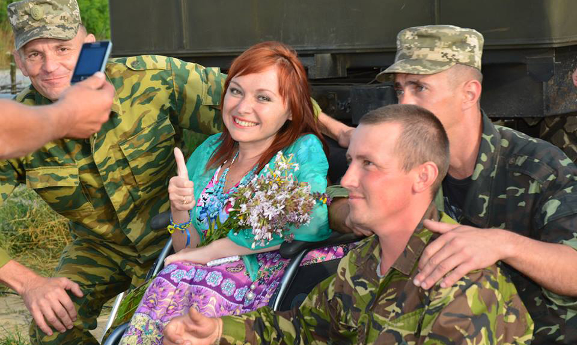
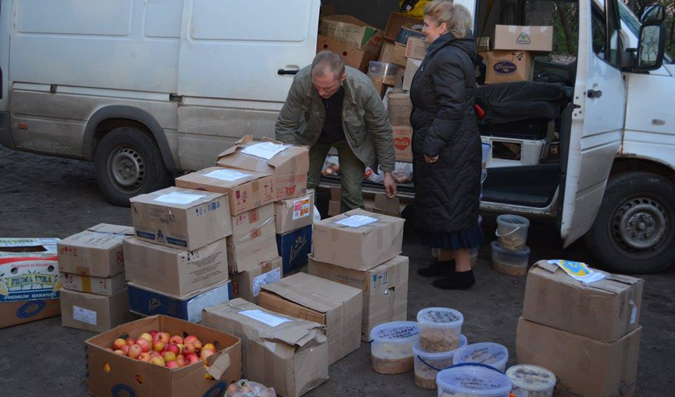
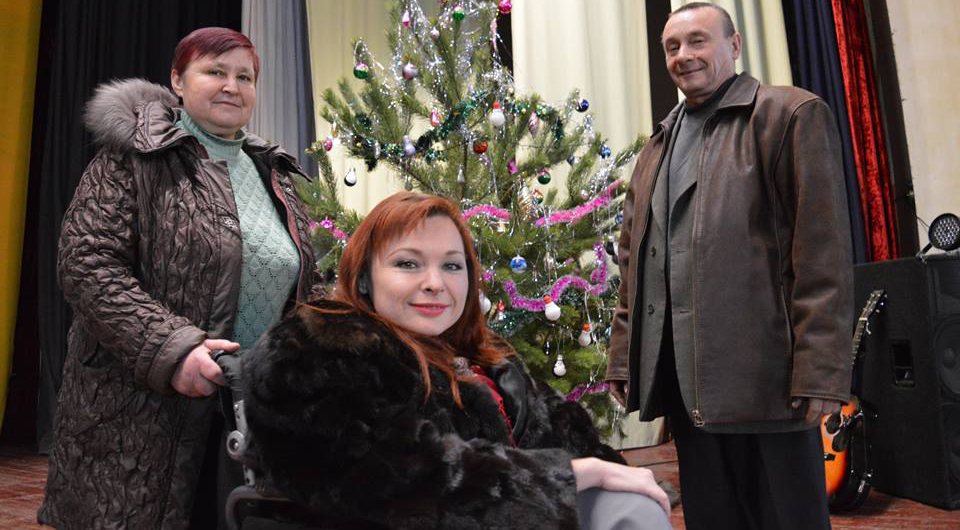
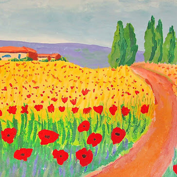
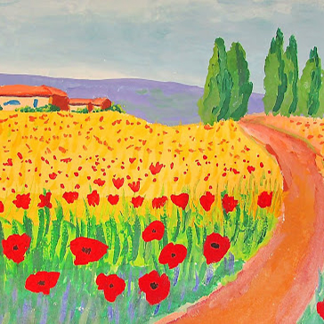

Як все почалось...
“Дуже чітко, наче це було вчора, пам’ятаю день 1 березня 2014 року. Тоді Росія оголосила нам війну. Було дуже страшно… Старокостянтинів – військове містечко, серед моїх знайомих та родичів – немало військових, отож про жалюгідний стан української армії я була обізнана цілком достатньо для того, аби усвідомлювати рівень небезпеки у випадку відвертих військових дій”. Як журналіст районного радіо Оксана взялася готувати репортаж про ситуацію в гарнізоні.
«Якби не сиділа у візку, стояла б поруч із бійцями з автоматом у руках...»
А потім були черги біля військкоматів, мобілізовані, добровольці… “Я робила репортажі, писала пости в соціальній мережі і… розуміла, що цього жалюгідно мало. Але що я, людина у візку, яка ніколи не тримала в руках зброю, вмію робити? Писати? Так, я пишу. Організовувати і проводити концерти?.. Кому вони тепер потрібні?”
Тендітна мужність Оксани Радушинської
Волонтерка просилася з концертом у Чонгар – на той час це була «найгарячіша» точка. У відповідь їй покрутили пальцем біля скроні і категорично відмовили… Відтак вже у квітні на Вербну неділю на летовищі авіаційної бригади на Старокостянтинівщині відбувся перший благодійний концерт для військовослужбовців.
“Запросила до участі в ньому знайомих співаків, домовилася з владою, аби виділили автобус та пальне, щоб завезти-відвезти артистів із Хмельницького. І відверто тішилася тим, що змогла, прислужилася, встигла внести і свою лепту в літопис новітньої української історії. Тоді думалося, що все от-от закінчиться.”,- Із гордістю та тривогою в серці розповідає Оксана Радушинська.
Люди гуртуються задля спільної мети.
Громадська організація "Творча сотня «Рух до перемоги» — недержавна громадська волонтерська організація, основним напрямком діяльності якої є благодійна підтримка військовослужбовців, учасників АТО (ООС), родин учасників АТО (ООС), цивільного населення у зоні АТО (ООС).
Колектив «Творчої сотні «Рух до перемоги» — високопрофесійні артисти: працівники філармонії, школи мистецтв, студенти мистецьких вишів, творчі й яскраві особистості. А ще — військові, для яких музика та пісня — невід’ємні складові життя. Разом вони щоразу створюють не просто концерт, а своєрідну літературно-музичну виставу, торкаючись найпотаємніших струн у душах вдячних слухачів у одностроях.
Янголи добра
Починаючи з 2015 року, колектив щомісяця здійснює гуманітарно-культурологічні поїздки в зону АТО (ООС). Неодноразово бував «на нулі» і в «сірій зоні». Станом на липень 2018 року здійснено понад 40 поїздок на Схід України, проведено більше 350 волонтерських концертів та акцій, зібрано і доставлено в зону АТО (ООС) більше 70 тонн гуманітарної допомоги.
Плідна робота волонтерів
Найголовніша задача Оксани Радушинської – культурна підтримка військовослужбовців. “Ми веземо пісню, музику, гумор, поетичне слово туди, де люди цілодобово перебувають у стані емоційного і фізичного навантаження – у шпиталі, у військові частини, на полігони України, в зону АТО”. Із теплом на серці та посмішкою на вустах розповідає Оксана Петрівна: “Після кожного концерту вишиковується черга бійців, котрі хочуть сфотографуватися, подякувати, обійнятися чи просто глянути в очі. Інколи такі мовчазні погляди красномовніші за будь-які слова, вони запам’ятовуються, вростають у душу”.
«Ми переможемо, ми не зламаємось,
Ми з Україною, ми підіймаємось.
Правдою-вірою ми переможемо!»
Оксана впевнена, що саме такий різновид волонтерської діяльності надзвичайно затребуваний серед вояків. Авжеж, потрібно розуміти, які пісні варто співати для поранених чи армійців, котрі тільки прийшли з бою, або незабаром – знову в бій. Потрібно виважувати кожне слово, аби воно несло розраду.
Гостинці бійцям
Окрім мистецької складової, жінці доводиться перейматися і хлібом насущним, відвозячи військовим в АТО гуманітарний вантаж. “За 2015 рік наша волонтерська спільнота зібрала і переправила на фронт близько 20 тон «гуманітарки» – від туалетного паперу до пічок-буржуйок і подушок, а ще продукти харчування, одяг, медикаменти, питна вода, консервація. Чого ми тільки не возили..”! Спільнота організовувала й концерти по збору коштів на купівлю карематів, спальників, бронежилетів (на початку війни з ними було дуже сутужно), а також медичного устаткування для шпиталю, різноманітні акції, спрямовані на фінансову підтримку армійців. Тепер опікуємося вже й родинами учасників АТО, особливо родинами тих земляків, котрі загинули на війні.
Ми, українці, робимо те, що від нас залежить – зі зброєю в руках, з мікрофонами, зі скриньками для збору пожертв, за кермом волонтерського автомобіля, котрий їде на передову...
Не тільки волонтери, а й усі небайдужі люди, з теплим серцем та чистою душею, щодня допомагають громадській організації "Творча сотня «Рух до перемоги»: матеріально, морально та фізично. Усі волонтери організації впевнені: неважливо у якій мірі допоможе людина, важливо те, що людям потрібно робити це щиро та усвідомлювати, що це добра справа!
Спасибі, Господи, за день, який минає –
Пливе у вічність човником легким.
За те, що є. За те, чого немає.
За те, що сталось й треба жити з тим.
Туман поліг на вишні, мов в завію.
Душа стозора дивиться в півсні.
Пробач, що я молитися не вмію,
А вмію оживляти лиш пісні.
Така туга й заплутана днів пряжа!..
І як у ній розчуть ті голоси,
Що відповідь впізна в них доля наша?
Й порадить хтось: “Ти хрест неси. Й проси
За білий світ. За стежку біля дому.
За сто доріг. І за серця людей.
За сутінки у човнику старому.
За ті пісні. За мир. І за дітей…”.
Спасибі, що живу, що величаю!
Що день оцей, як храм, зріс на путті.
Дай, Господи, добра всім, кого знаю
І тим, з ким ще не стрілася в житті!
(Із збірки "Стукав сніг...").
Із Оксаною завжди поруч її ангели-охоронці
Мама і тато. Вона теплими словами розповідає... Вони – пенсіонери. Проте їх не цікавить вимірювання тиску, серіали чи заочні баталії з тими політиками, котрих показують по телевізору. Вони в мене дієві і прогресивні! А ще вони – завжди поруч зі мною: на літературних імпрезах, фестивалях і конкурсах, під час виступів, навчання, у госпіталях з концертами для бійців та поїздках у зону АТО.
З Україною в серці
Я знаю, що не маю права зрадити захисників України – сильних, неговірких, незламних, котрі так відверто довіряють мені/нам, не одягаючи балаклави на обличчя й знімаючи з душ бронежилети. Бодай на коротку мить спілкування.
 

Що потрібно зробити нам, українцям, для перемоги, щоб у нас, нарешті, настав мир?
Ми, українці, робимо те, що від нас залежить – зі зброєю в руках, з мікрофонами, зі скриньками для збору пожертв, за кермом волонтерського автомобіля, котрий їде на передову... А коли настане мир – залежить від політиків найвищого рівня. Українських і світових. І чи буде це бодай мир, чи мир в результаті перемоги України – також залежить від них, бо ж армійці прагнуть наступу, а політики прагнуть домовленостей.

"Ми переможемо, ми не зламаємось..."
"— Мене часто друзі та знайомі запитують, коли все побачене і пережите опишу в черговій книзі. Поки пишу вірші й накопичую матеріал для книги. Вона буде, проте вже після нашої перемоги"